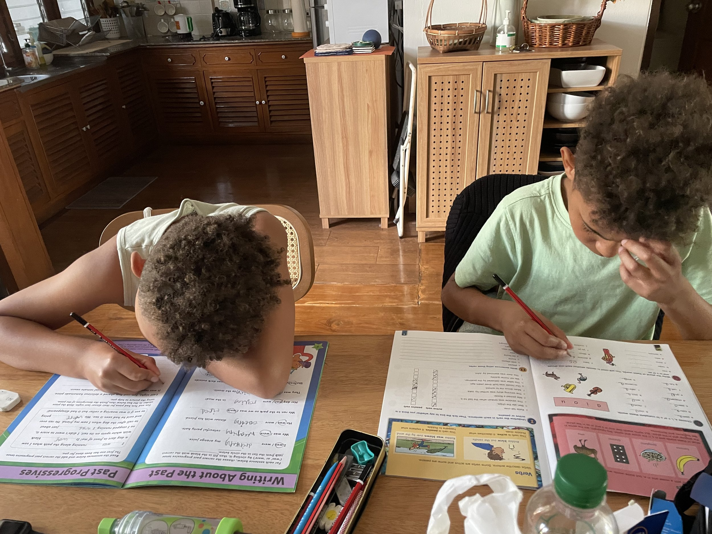

One aspect of doing this trip with our two boys (12 and 10) has been — when people have asked about it — the exclamation, "But what will you do for school…?!", or similar. In the same breath, most people will acknowledge the experience that the boys will receive from such a trip as being far more educating than anything taught within the four walls of a classroom, but the initial incredulity often points towards a closed-minded view of how young people can be educated.
Our two boys are peas in a pod, yet incredibly different. Two years two months between them, and yet constantly mistaken for twins (which irritates big E no-end), they are living proof of how two siblings born and raised within the same household and receiving of the same love, care and attention (hopefully…) can be radically heads-and-tails, black-and-white, top-and-tail to each other. One thrives in a mainstream education establishment, the other thrives in more of a creative setting. One is a thinker, the other is a doer. One's a fucking giant, the other a princess. But anyway, they've both experienced mainstream education and both, in different ways, been let down by it.
Mainstream education doesn't appear to have moved on for generations, doesn't appear to have progressed or embraced the fact that we are now a quarter of the way through the 21st century. Instead of constantly evolving awareness to how the world is and how work and careers actually are for people, school systems seem to double-down on tests and tables, reports and rankings. Helpful to whom?
Our youngest entered Year 3 of an independent mainstream setting having not been in a school since nursery, and (boast alert) bossed his way through, his reading level going from 'under' where he should be, to reading well above his 'level'. NB: it's hard to find a tonal balance between being cynical about a system whilst simultaneously being proud of your child for doing so well in said system. He is alert, curious and keen to learn. But despite this, he has still — or rather, we have, as his parents — felt the walls and ceilings of constriction of an outdated syllabus.
Is Maths still important? Yes, of course, but how about tempering some of the been-there-since-time-immemorial aspects — such as trigonometry, which I'm sure we all continue to use on a daily basis; "sorry, is it okay to park here?" "It is if you can tell me the angle of this isosceles triangle, luv…" — with investing? Financial planning? How to budget? School could reform and actually be a place of real learning instead of fact-stuffing and consequent regurgitation for exams; surely the shallowest way of measuring someone's actual knowledge of a subject.

Our eldest's experience of school began in Reception and continued to halfway through Year 1, when it became clear that — simply because he processes information in a way different to the mainstream — 'regular' school was doing actual harm. Thus, home-education and then alternative settings. Just to be clear: neither one is adverse to entering an educational setting and adhering to the framework of going somewhere Monday–Friday, but why would we send them somewhere that would damage them over time? If it is clear that our eldest isn't particularly into academia and is more naturally drawn towards a creative avocation, such as music, why try and cram this square peg into the round hole of mainstream school?
at all.
Okay, this has turned into a diatribe. I'm simply saying that the choice to take them 'out' of school for this experience — this once-in-a-lifetime experience (although we'll always travel, one way or another) — wasn't a choice at all. We've brought textbooks with us, which they diligently focus on for an hour or so daily; books for them to read for pleasure and pass onto other children they meet. Instruments for them to play. Plus there's always the option of online tutoring, which they were doing before we left the UK. Add to that the cultures they will experience, the places they will see, the sights, sounds and smells that will lodge themselves into their memories forever, backed up by photos, videos and journaling, and again — there's no choice at all.
Which brings me to their Blackjack training.
What's the point in having children if you can't somehow profit off of them financially? They're gonna train, train, train and take down Vegas. Then Atlantic City. Then… Margate?
Both of them have finally — FINALLY — reached the age and stage where they are (mostly) keen to actually join in and learn a card game and play as a family. The first one we've taught them is '21', or Blackjack (although there are no chips or betting involved). This, as well as cultivating some nice time spent together as a family, is a sneaky way of working some extra maths into the day. As each round is fairly short (we usually play the first-to-five), there is constant adding-up to be done, albeit only to the mid-twenties, but it's the sort of quick-fire repetition of the same numbers that can cement the basic building blocks of single-digit addition.
For instance, despite entering (only just!) my fourth decade, I still need a moment or two when confronted with 8+6 or 6+8, compared to other mono-digit additions such as 7+7 or anything with a 9. It's 14, I know. If only my folks had taught me to gamble!
So that's it — I'm now looking at other slightly more complex games such as gin rummy to get them into.
— J ✻